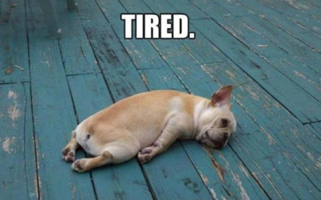

Vì sao các nhân vật phản diện vẫn được yêu thích?
Vì sao các nhân vật phản diện vẫn được yêu thích? Apple Watch 6 và SE về Việt Nam
Apple Watch 6 và SE về Việt Nam Nike Dunk Low “Laser Orange” ra mắt vào năm 2021
Nike Dunk Low “Laser Orange” ra mắt vào năm 2021 Bí quyết giúp các bạn sinh viên 'thong thả' hơn khi thuyết trình
Bí quyết giúp các bạn sinh viên 'thong thả' hơn khi thuyết trình "Career break" - Khi nào thì bạn cần một khoảng nghỉ cho sự nghiệp?"
"Career break" - Khi nào thì bạn cần một khoảng nghỉ cho sự nghiệp?""Chán" đúng cách sẽ giúp bạn sáng tạo hơn

Từ khi công nghệ phát triển và những chiếc điện thoại trở thành nguồn vui di động của con người, chúng ta hiếm khi nào trải nghiệm cảm giác chán. Nhưng lúc ta chán nhất lại là lúc não được thảnh thơi đi tìm niềm vui riêng. Não người luôn muốn được kích thích, và trạng thái chán là môi trường hoàn hảo để não sáng tạo ra những kích thích này.
1. Cảm giác chán khiến chúng ta sáng tạo hơn
Nhà văn Neil Gaiman từng khuyên những cây bút trẻ, “Bạn phải để não mình chán tới mức nó không còn gì khác để làm ngoài tự kể chuyện cho nó nghe”. Neil không phải người duy nhất nhận ra mối liên hệ giữa sự chán và óc sáng tạo. Mối liên hệ này đã đã được giới khoa học chứng minh trong một số nghiên cứu, gần đây nhất là một nghiên cứu được công bố năm 2019.
Trong nghiên cứu này, các đối tượng được yêu cầu phân loại đậu (việc nhàm chán) hoặc chơi trò chơi thủ công (việc thú vị). Sau đó, họ tham gia vào thử thách sáng tạo ra những cái cớ hay nhất cho việc đi trễ. Kết quả cho thấy người nhặt đậu kiếm được nhiều lý do đi trễ thú vị hơn người được chơi trò chơi. Nhiều nhà văn nổi tiếng trong lịch sử đã nhận ra giá trị của sự nhàm chán. Tiểu thuyết gia đạt giải Booker Anne Wright chia sẻ, “Tôi ngồi đợi cảm giác chán tới vì với tôi nó là một dấu hiệu tốt. Đó là lúc cuộc vui bắt đầu”. David Foster Wallace hứng thú với cảm giác chán tới mức dành cả cuốn sách ‘The Pale King’ cho cảm xúc này. Không chỉ các nhà văn, rất nhiều người làm sáng tạo khác đã từng ca ngợi phép màu của sự nhàm chán. Có thể thấy, cảm giác chán là “nàng thơ” giấu mặt của rất nhiều văn nghệ sĩ trên thế giới. Tuy vậy, không phải chỉ nghệ sĩ mới biết sáng tạo.
2. Bạn đang đè nén óc sáng tạo của mình vì bạn không cho phép mình được chán
Khi còn là trẻ con với nhiều thời gian rảnh để tò mò, nghĩ vẩn vơ, chúng ta đã sáng tạo đủ trò nghịch tinh và vô số suy nghĩ hay ho về thế giới. Càng lớn, việc cho mình được chán càng trở nên khó chấp nhận. Với nguồn nội dung vô hạn từ Internet và mạng xã hội, bạn không bao giờ thực sự chán, nhưng cũng chẳng thực sự hào hứng nốt. Trạng thái “bình bình” này làm phai dần sự sáng tạo, vì não đang quên mất khả năng tạo ra niềm vui một cách “thủ công”.
3. Sự nhàm chán giúp ta đi vào tiềm thức - vùng đất của sự sáng tạo
Não người là một cơ quan cực kỳ thú vị. Không như tay chân, não bộ có nhiều hoạt động mà chúng ta không thể kiểm soát được - ví dụ như tiềm thức.
Tiềm thức là những suy nghĩ trôi nổi luôn tồn tại và ngầm chi phối chúng ta dù nó không nằm trong trọng tâm chú ý của não bộ. Khi ta ngủ cũng là lúc tiềm thức hoạt động mạnh nhất, và sản phẩm của hoạt động này là những giấc mơ, thế giới nơi những chuyện kỳ lạ xảy ra. (Ví dụ như Dmitri Mendeleev phát minh ra bảng tuần hoàn hóa học khi nằm mơ.)
Nhưng con người ta không chỉ mơ lúc ngủ. Chúng ta có cả “mơ giữa ban ngày” (daydreaming) khi đột nhiên mất tập trung và để tâm trí lạc trôi lúc đang làm dở việc gì đó. Điển hình là lúc ta nghĩ ra những thứ kỳ cục khi đang “kỳ cọ”, dù là kỳ cọ mình trong nhà tắm, kỳ cọ răng trước gương hay kỳ cọ chén trong bồn nước. Đây là những việc mang tính lặp lại và không cần đòi hỏi nhiều trí lực, nên não bộ có thể rảnh rang bắt đầu những ý tưởng mới. “Showerthoughts” là một từ lóng chỉ những sáng kiến nảy ra ở những tình huống như thế. Vậy có thể, chúng ta đạt được khả năng sáng tạo cao nhất trong tình trạng nửa tỉnh nửa mơ, lững lờ giữa tiềm thức và ý thức.
4. Chán đúng cách sẽ giúp bạn sáng tạo hơn
Chán cũng có chán này chán kia. Có những cái chán rất vô ích, ví dụ như chán nản, khi ta chỉ thấy mệt mỏi và chẳng muốn làm gì. Để tránh né cảm giác này chúng ta thường lạm dụng công nghệ. Đây là việc thụ động, tốn tài nguyên não, dễ gây stress, nhưng dễ nghiện.
Khác với chán nản, sự nhàm chán mới là thứ bạn muốn để có thể chủ động sáng tạo. Nhàm chán là khi ta đang rửa chén nhưng lại mơ màng được làm gì đó thú vị hơn. Lúc này não sẽ tự bày trò “chơi đùa” với những suy nghĩ lơ lửng trong tiềm thức. Vậy để giữ mình trong trạng thái này, ta phải rửa chén cả ngày sao? Hãy rửa chén cả ngày nếu bạn thích, hoặc bạn có thể dạo bộ trên một con đường quen thuộc, đi bơi vài vòng, hay đơn giản là ngồi một chỗ, nhắm mắt và cảm nhận môi trường xung quanh. Đây là những việc không cần tập trung quá nhiều, giúp tâm trí được lang thang tới những ý tưởng mới mẻ và hay ho nhất.
- 3 Tư duy thiết kế giúp mình rút gọn thời gian giải quyết vấn đề
- Bae là ai? Bạn có bae nào trong đời chưa?
- Nên làm gì khi vừa có một ngày tồi tệ?